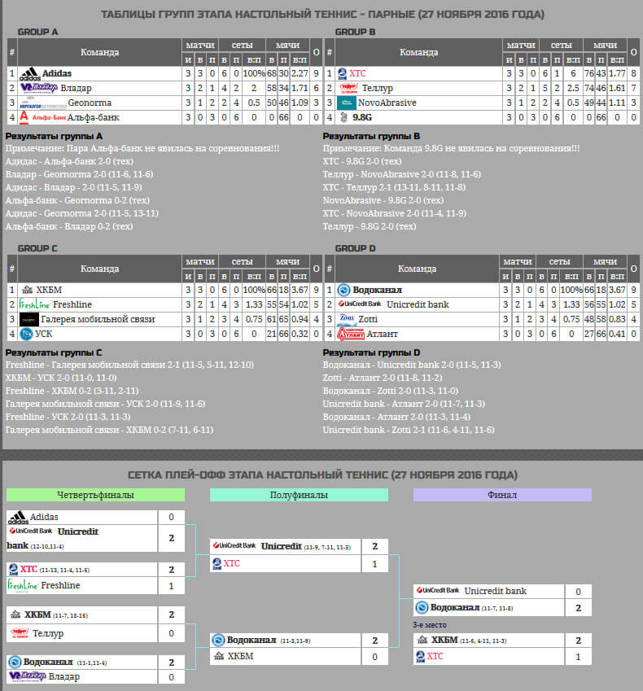

Настольный теннис - "Битва корпораций" II сезон
27 ноября в воскресенье в фитнес центре "King", расположенном на перекрёстке Дружбы народов и Гвардейцев Широнинцев, прошёл очередной этап круглогодичных городских спортивных состязаний "Битва корпораций".
Не все участники сборной "ХТС" по теннису могли предположить, что нас ждёт пьедестал в этом виде спорта, поэтому неожиданного награждения дождались только наши замечательные девушки. Однако, все поработали на славу и на престиж предприятия!
В соревнованиях изначально предполагалось участие 16 команд, но, в силу различных факторов, одна группа состояла из трёх команд, вместо четырёх, как положено. В этой короткой группе оказались наши ребята.
Фото с соревнований смотрите здесь ⇐
Были мужские одиночные соревнования, женские одиночные соревнования и соревнования смешанных пар. По ходу турнира оказалось, что у Альфа-банка не оказалось смешанного дуэта, поэтому в парных состязаниях даже две группы состояли из трёх команд.
В мужском одиночном разряде выступил чемпион КП "ХТС", многоопытный Александр Шовковый и добыл три победы: одну - техническую, вторую - разгромную (11:1,11:4), третью - напряжённую (14:12,11:8). Шовковый занял первое место в группе и вышел на занявшего второе место в группе С, представителя "КБ Морозова". В четвертфинале была сложная партия, но на разминке чувствовалась уверенность и преимущество Шовкового над соперником. После первой проигранной партии, Александр собрался и обыграл соперника во второй. Третяя партия была за соперником. (9:11,11:9,5:11). Проигрыш 2:1 позволил Александру Шовковому занять пятое в общем зачёте, как лучшему из проигравших в четвертьфинале.
Кликнув по этой картинке, вы можете подробно посмотреть весь турнирный путь наших спортсменов:
Обидно, что Шовковый - единственный, кто проиграл выходцу со второго места. Однако, победивший нашего спортсмена проявил феноменальную живучесть, разыгрался по ходу турнира и выиграл даже матч за 3-е место.
В женскому одиночном разряде выступила чемпионка КП "ХТС" - Наталия Гармаш. В групповом турнире Наталия одержала две победы (техническая) и (11:8,11:8), а также потерпела одно поражение (8:11,7:11). Заняв второе место в группе, Наталия вышла на представительницу "Freshline" - победительницу группы C. В первой партии четвертфинального матча Гармаш оказывала достойное сопротивление, но уступила 7:11. Во второй партии представительница "Freshline" одержала более уверенную победу - 3:11.
Кликнув по этой картинке, вы можете подробно посмотреть весь турнирный путь наших спортсменов:
Точной статистики нет, но, по моим предположениям, Наталия заняла 6-е место в женском одиночном разряде, так как лишь одна проигравшая в 1/4 финала выиграла больше подач, чем Наталия.
Судьба нашего смешанного дуэта, Вячеслав Педченко и Ольга Иваненко, на турнире сложилась наиболее удачно. Одна победа в группе была теническая. Вторая победа налегке и на классе (11:4,11:9). Третья победа, одержанная нашими ребятами в упорной борьбе (13:11,8:11,11:8), расположила наших на первом месте в группе B. Сложный матч 1/4 финал с командой "Freshline" (11:13,11:4,11:6) оказался судьбоносным для нашей сборной вцелом. Таким образом, у нас объявился первый полуфиналист. Первая партия матча 1/2 финала с командой "Unicredit bank" была проиграна Вячеславом и Ольгой благодаря двум ошибкам наших теннисистов при подаче - 9:11. Во второй партии нашим умничкам удалось поквитаться с соперниками - 11:7. В третьей партии уже не хватило запаса прочности - 5:11. Наши, играя на равных, проиграли и отправились готовится к матчу за 3-е место. В матче за 3-е место нашим соперником стали представители "КБ Морозова". Первую партию проиграли 6:11. Во второй партии Ольга и Вячеслав блестяще восстанавливают паритет - 11:4. В решающей партии ребята уступили - 3:11.
Кликнув по этой картинке, вы можете подробно посмотреть весь турнирный путь наших спортсменов:
Таким образом, все матчи Вячеслава Педченко и Ольги Иваненко на стадии плей-офф были напряжёнными и драматичными, с шансом на победу. Четвёртое место нашего дуэта - это очень высокий показатель. Так держать!
Организаторы турнира, просуммировав все места, занятые участниками команд на турнире, подняли сборную КП "ХТС" на 3-е место в этапе настольный теннис второго сезона "Битвы корпораций". Это несомненный успех!
Градус соперничества накалён до предела. В общем зачёте "Битвы корпораций", наша сборная поднялась на IV место среди 20-ти корпораций, что даёт нам возможность побороться за призовые места осеннего кубка. Борьба в 5-м этапе - боулинг будет происходить, в основном, между этими шестью местами:
- Харьковводоканал – 12 очков
- Zotti – 17 очков
- Adidas – 22 очка
- ХТС – 24 очка
- Галерея мобильной связи – 29 очков
- Freshline – 29 очков